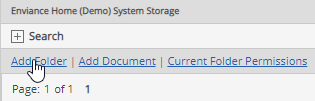
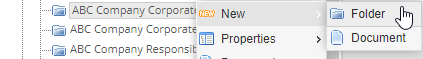

Document folders are used to store documents in the Documents library by logical groups and to facilitate setting permissions. When you create your document folders, you should consider both your organization and security needs.
Folders should be set up in a manner that facilitates granting permissions to specific users/groups for the documents they need. Permissions are best set at the folder level. Permissions granted on a folder are automatically inherited by the documents and subfolders it contains. New documents and subfolders automatically inherit the parent folder permissions. However, when necessary, specific permissions may be set on subfolders and documents.
See Document Permissions for more information.
Users with Edit permissions on a folder may create and edit subfolders within that folder.
You can create subfolders in any folder for which you have Edit permissions. The subfolders you create will inherit the same permissions as the parent folder. To change the permissions, you must also have the Manage Documents right. To create a new document folder:
Select Add Folder.

Or, from the tree, right click the folder under which you want to create a subfolder and choose New > Folder.

If the Add Folder option is not enabled, you only have View permission for the current folder and cannot create new folders.
Enter a Name for the new folder and an optional Description.
If you have Edit permission on a folder, you can edit the folder properties. Folder properties include the name and the description.
Edit the properties as desired.
You can also rename a folder by right clicking the folder and choosing Rename.
You can create a copy of an existing folder and save it to another location. When you copy a folder, all documents are copied with it. Associated document links are not copied. Permissions are not copied. The permissions on the new folder will be inherited from the new parent folder.
Enter a new name for the folder.
When you delete a folder, all items it contains are also deleted. When documents or citations are deleted, all links to associated objects are also removed.